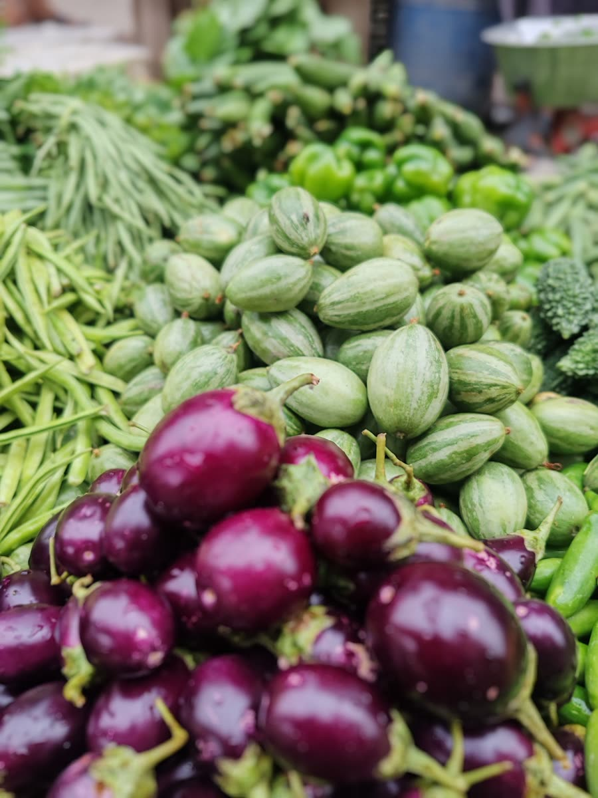

Fresh Bangladeshi vegetables, every week, at the best landed price
Gourds, okra, brinjal, beans, green chilli, leafy greens, molokhia, kochur loti and more, checked at the packhouse on packing day and flown from Dhaka to your airport.
In short: We run weekly air consignments of fresh vegetables from Dhaka for Gulf and UK buyers, and sea shipments for hardy vegetables. You pay the packhouse price, the freight and a fixed QC fee, shown line by line, so you know your landed cost per kg before you order.
Landed cost per kg
Know your margin before you order.
Enter the packhouse price, air freight and your selling price. The calculator adds packing, our fee, clearance and an allowance for shrink, so the price you sell at covers every cost.
All figures are examples for planning, not a price offer. Your offer shows each figure for your airport and week.
29 vegetables
What we ship, and when.
Add the vegetables you want to your quote. We confirm weekly availability and price every Thursday for the following week.
| Product | Season | Shipped by | Main markets | Quote |
|---|---|---|---|---|
| Potato আলু | Harvest February–April; shipped from cold store for most of the year | Air or sea (reefer) | Malaysia · Sri Lanka · Nepal · Middle East | |
| Pointed gourd পটল | Winter vegetables November–March; gourds April–October | Air | UK · Middle East | |
| Teasel gourd কাঁকরোল | Winter vegetables November–March; gourds April–October | Air | UK · Middle East | |
| Bitter gourd করলা | Winter vegetables November–March; gourds April–October | Air | UK · Middle East · EU | |
| Bottle gourd লাউ | Winter vegetables November–March; gourds April–October | Air | UK · Middle East | |
| Okra ঢেঁড়স | Winter vegetables November–March; gourds April–October | Air | UK · Middle East · EU | |
| Brinjal (aubergine) বেগুন | Winter vegetables November–March; gourds April–October | Air | UK · Middle East | |
| Yard-long bean বরবটি | Winter vegetables November–March; gourds April–October | Air | UK · Middle East | |
| Taro & arum কচু ও মুখিকচু | Winter vegetables November–March; gourds April–October | Air or sea (reefer) | UK · Middle East | |
| Green chilli কাঁচা মরিচ | Winter vegetables November–March; gourds April–October | Air | UK · Middle East | |
| Leafy greens শাক (লাল শাক, পুঁই শাক) | Winter vegetables November–March; gourds April–October | Air | UK · Middle East | |
| Shatkora citrus সাতকরা | Winter vegetables November–March; gourds April–October | Air | UK | |
| Cabbage & cauliflower বাঁধাকপি ও ফুলকপি | Winter vegetables November–March; gourds April–October | Air or sea (reefer) | Malaysia · Singapore · Middle East · UK | |
| Tomato টমেটো | Winter vegetables November–March; gourds April–October | Air | Middle East · Nepal | |
| Pumpkin মিষ্টি কুমড়া | Winter vegetables November–March; gourds April–October | Air or sea (reefer) | Middle East · Malaysia · UK | |
| Ash gourd চালকুমড়া | Winter vegetables November–March; gourds April–October | Air or sea (reefer) | UK · Middle East | |
| Snake gourd চিচিঙ্গা | Winter vegetables November–March; gourds April–October | Air | UK · Middle East | |
| Ridge & sponge gourd ঝিঙ্গা ও ধুন্দুল | Winter vegetables November–March; gourds April–October | Air | UK · Middle East | |
| Drumstick সজনে | Winter vegetables November–March; gourds April–October | Air | UK · Middle East | |
| Green banana (plantain) কাঁচকলা | Winter vegetables November–March; gourds April–October | Air | UK · Middle East | |
| Green papaya কাঁচা পেঁপে | Winter vegetables November–March; gourds April–October | Air | UK · Middle East | |
| Coriander leaves & herbs ধনেপাতা ও হার্বস | Winter vegetables November–March; gourds April–October | Air | UK · Middle East | |
| Lemon & lime কাগজি লেবু | Winter vegetables November–March; gourds April–October | Air | UK · Middle East | |
| Jute leaves (molokhia) পাট শাক | Winter vegetables November–March; gourds April–October | Air | Middle East · UK | |
| Flat bean (hyacinth bean) শিম | Winter vegetables November–March; gourds April–October | Air | UK · Middle East | |
| Radish মুলা | Winter vegetables November–March; gourds April–October | Air | Middle East · UK | |
| Cucumber শসা | Winter vegetables November–March; gourds April–October | Air | Middle East · UK | |
| Banana flower মোচা | Winter vegetables November–March; gourds April–October | Air | UK · Middle East | |
| Kochur loti (taro stolon) কচুর লতি | Winter vegetables November–March; gourds April–October | Air | UK · Middle East |
FAQ
Fresh vegetables: common questions
How do you keep vegetable prices low?
We buy from packhouses that pack for export, without middle traders; combine many vegetables in one air consignment; book freight at the best rate available for your airport; and move hardy vegetables such as potato, pumpkin, ash gourd, taro and cabbage by sea, which costs far less per kg than air.
How do you reduce losses on arrival?
Vegetables are graded and checked at the packhouse on packing day, pre-cooled where needed, and trucked to the airport cargo shed with photos at each step. You receive an arrival report template and we settle shortage or quality claims with the packhouse.
What is the minimum order?
From 500 kg per air consignment, mixed across several vegetables. Sea shipments of hardy vegetables start at one 20′ or 40′ reefer.
Which documents come with each shipment?
A phytosanitary certificate from the Plant Protection Wing of the Department of Agricultural Extension, a certificate of origin, invoice, packing list and air waybill.
What does the Fresh service cost?
US$120 per air consignment up to 3 tonnes, or US$400 per month for a weekly programme of four consignments. Pesticide tests are billed at lab cost.
Weekly from Dhaka
Start a weekly vegetable programme.
Tell us your airport, the vegetables and the weekly volume. We reply with a landed price per kg within 24 hours.